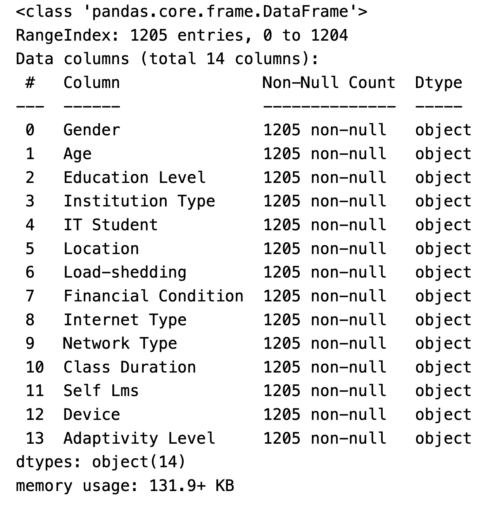
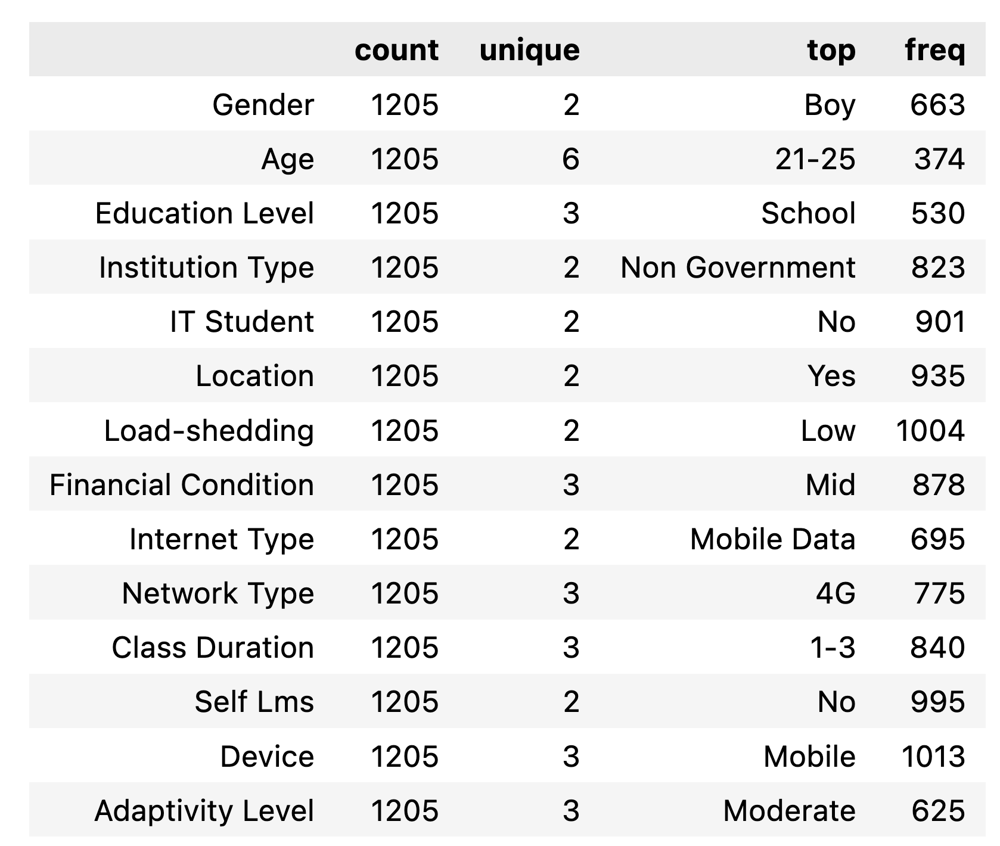
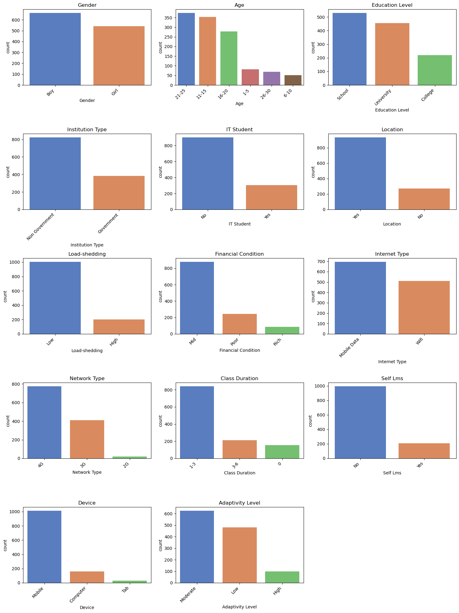
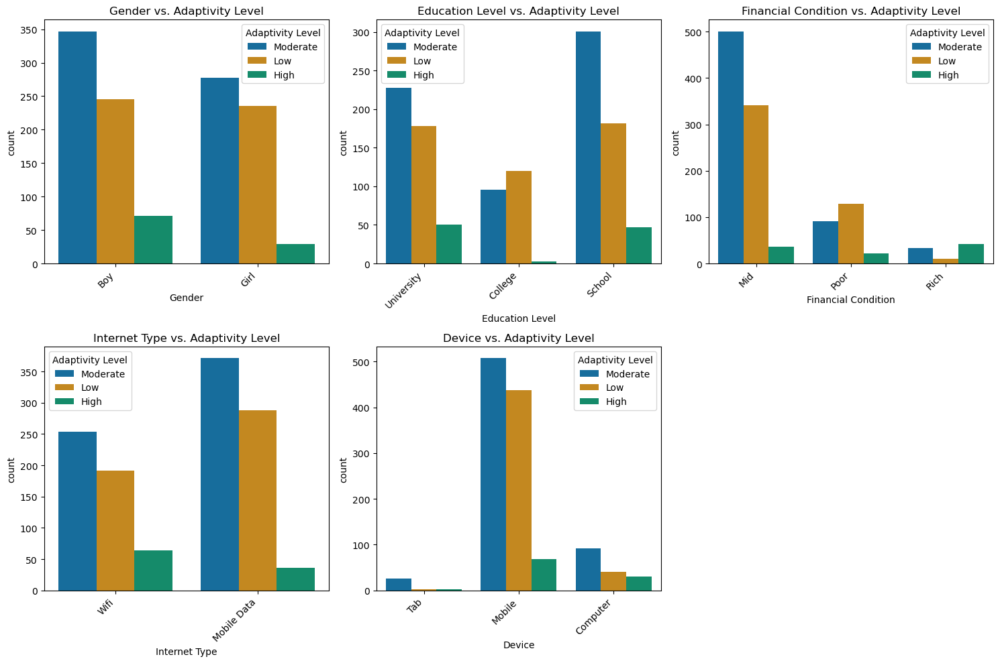
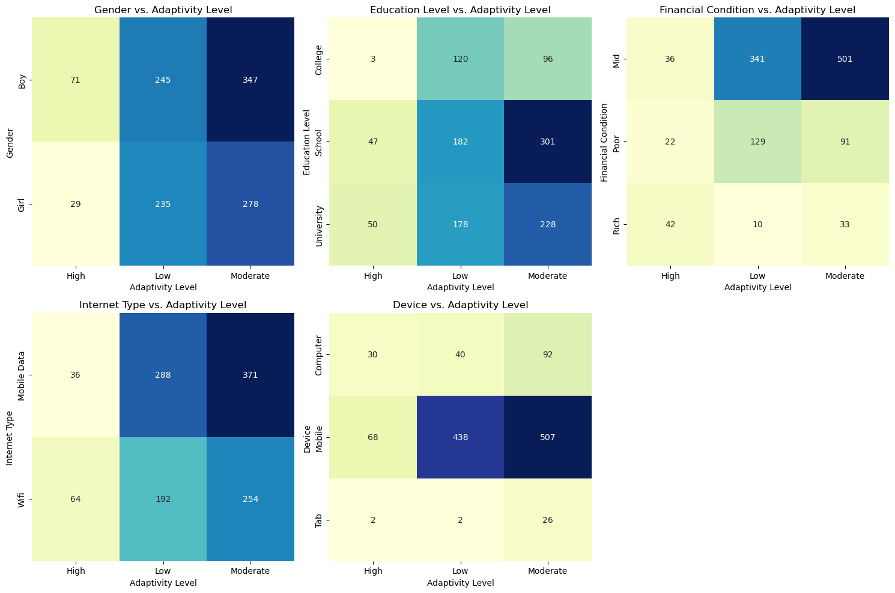
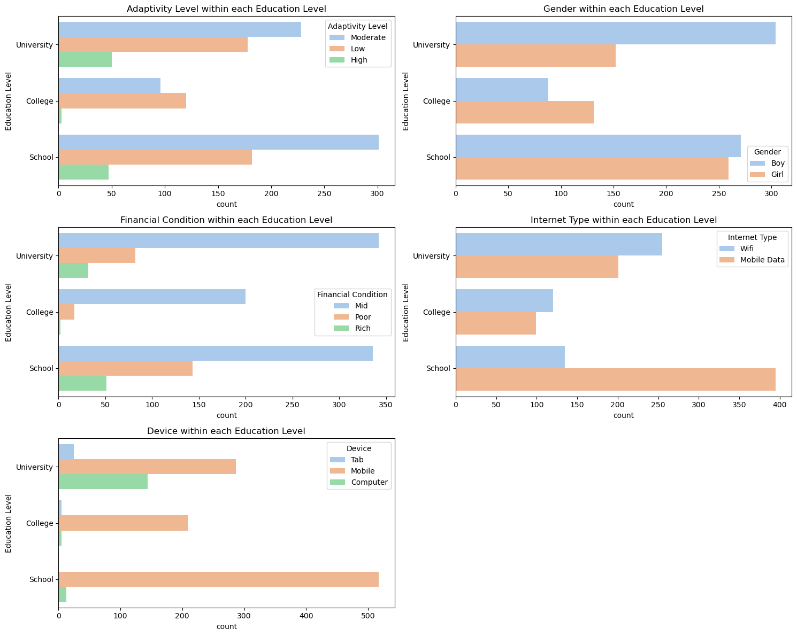
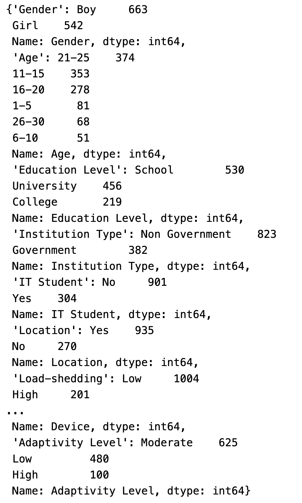

Data Exploration
Exploratory Data Analysis (EDA)
I have several datasets that will be used for this project, and here I will do EDA mainly for the “students_adaptability_level_online_education” dataset.
Data Understanding:
Data Source: Students’ Adaptability Level Prediction in Online Education using Machine Learning Approaches (DOI: 10.1109/ICCCNT51525.2021.9579741) You can find the raw data here
Data Information: There are 14 features in total and all of them are ‘object’ type.

Descriptive Statistics:
Notes: Most of the data in this dataset is in categorical form, so we will not try to compute descriptive statistics like mean or median. Instead, we will provide frequency distributions to get a rough sense of how these data are distributed.
Comments: Here we can see that some of the variables are binary variables and most of them contains less than 5 values.

Data Visualization:
- Comments: First we do univariate analysis for our dataset. These visualizations provide a good overview of the distribution of different variables in the dataset.
Key Observations:
There are more boys than girls in the dataset. Most students are in the 21-25 age range, followed by 16-20. There are fewer students in the other age ranges.
A majority of students are from non-government institutions and most students are not IT students.
Most students have a proper place to participate in online classes. More students use mobile data compared to Wi-Fi.
Most students are from families with a mid-level financial condition, followed by poor, and then rich.

Correlation Analysis:
- Comments: correlation analysis typically applies to numerical data, but all the variables in our dataset are categorical. For categorical variables, we can use other methods like Heatmaps to show associations or dependencies between variables. The plots below can give us some insights into our variables.
Key Findings:
Both genders show a similar distribution across different adaptivity levels, with the majority in the moderate adaptivity level.
University students are more likely to have a high adaptivity level compared to school and college students.
Students from mid financial condition families are spread across all adaptivity levels, with the majority in the moderate level. Students from rich families are mostly in the moderate and high adaptivity levels, with very few in the low category.
Students using computers tend to have higher adaptivity levels compared to those using mobiles or tablets.


Hypothesis Generation:
Notes: Part of my project is to examine what kind of factors can influence student’s online learning. Therefore, we can generate some hypothesis regarding this topic.
Hypothesis:
- Gender and Adaptivity Level:
- Null Hypothesis: There is no significant difference in adaptivity levels between male and female students.
- Alternative Hypothesis: There is a significant difference in adaptivity levels between male and female students.
- Financial Condition and Adaptivity Level:
- Null Hypothesis: The financial condition of a student’s family does not affect their adaptivity level to online education.
- Alternative Hypothesis: The financial condition of a student’s family affects their adaptivity level to online education.
Data Grouping and Segmentation:
Notes: Here we group the data by education level (University, College, School) to analyze how adaptivity levels and other factors vary across different education levels.
Findings: The gender distribution is fairly balanced across all education levels; Students from mid financial conditions are prevalent across all education levels; There is a higher proportion of rich students in the university level compared to school and college.

Identifying Outliers:
Notes: Outlier detection is typically applied to numerical data, where statistical methods can be used to identify values that deviate significantly from the rest of the data. However, the dataset does not contain any numerical columns, so our approach to outlier detection will need to be adjusted. We can still investigate the distribution of values in the categorical columns to identify any unusual or unexpected patterns that might indicate data quality issues.
Findings: Based on the unique value counts for each categorical column, there don’t appear to be any blatant anomalies or irregularities in the dataset. The values in each column seem to be consistent and within expected ranges. However, there are a few points worth noting: for example, the “0” value in the “Class Duration” column could potentially be an anomaly or a data entry error, as it’s not clear what “0” hours of class duration would mean in the context of online education. It might be worth investigating these entries further to understand if they are valid or if they represent a data quality issue.

Report and discussion of methods and findings:
The dataset contains 1205 entries with 14 categorical variables.There are no missing values, and all categorical variables contain expected and consistent values
When delving into individual variables, we observe a gender distribution skewing slightly towards boys, and a prominent presence of students in the 11-25 age range, with the majority being at the school or university level. A significant portion of these students come from non-government institutions and reside in urban areas. Despite the limited number of IT students, the dataset provides a broad overview of the student demographic.
In terms of technology access and internet connectivity, a larger number of students have mobile data connections, primarily on 4G networks, and use mobile devices for online education. This is coupled with a general experience of low load-shedding across the board. Focusing on their online education experience, most students have 1-3 hours of online classes, but there is a noticeable lack of engagement with Learning Management Systems.
When examining the adaptability levels in relation to other variables, certain patterns emerge. Higher adaptability is often linked with being an IT student, having stable internet connectivity (preferably wifi), using computers for online education, engaging with longer online classes, and having access to Learning Management Systems. Financial stability also plays a crucial role, with students from more affluent backgrounds exhibiting higher adaptability levels. Conversely, lower adaptability levels are more common among younger students, those from less affluent backgrounds, those experiencing frequent load-shedding, and those relying on mobile devices for online education.
These insights underscore the importance of technological access and financial stability in fostering a conducive environment for online education. They highlight potential areas for intervention, such as improving internet connectivity, promoting the use of Learning Management Systems, and offering additional support to students from less privileged backgrounds to enhance their adaptability and overall experience in an online learning setting.
Tools and Software:
Python: pandas;matplotlib;seaborn